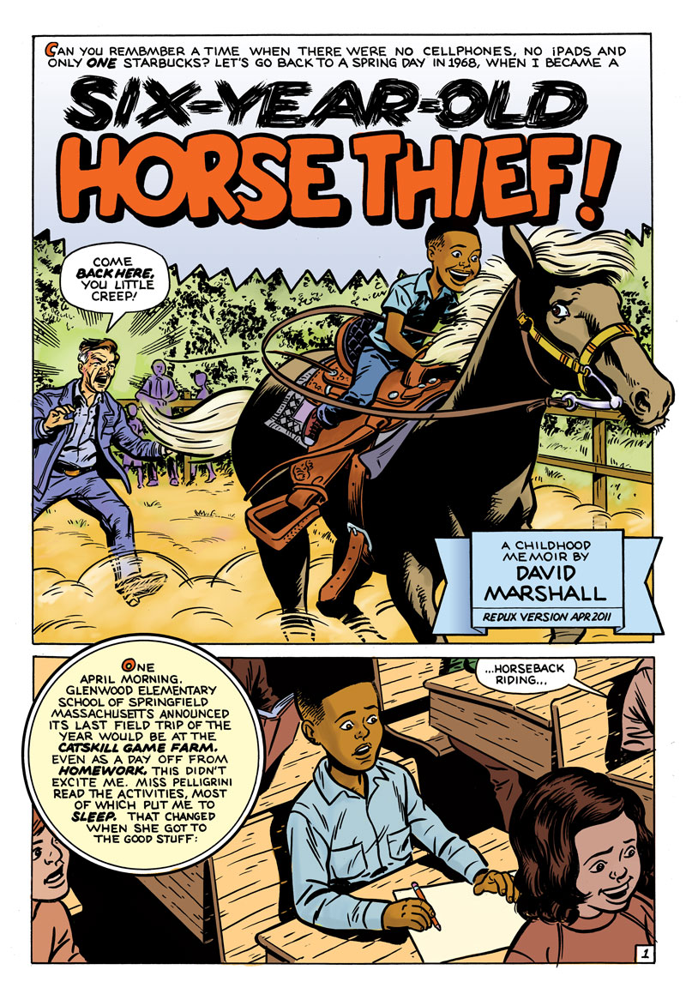
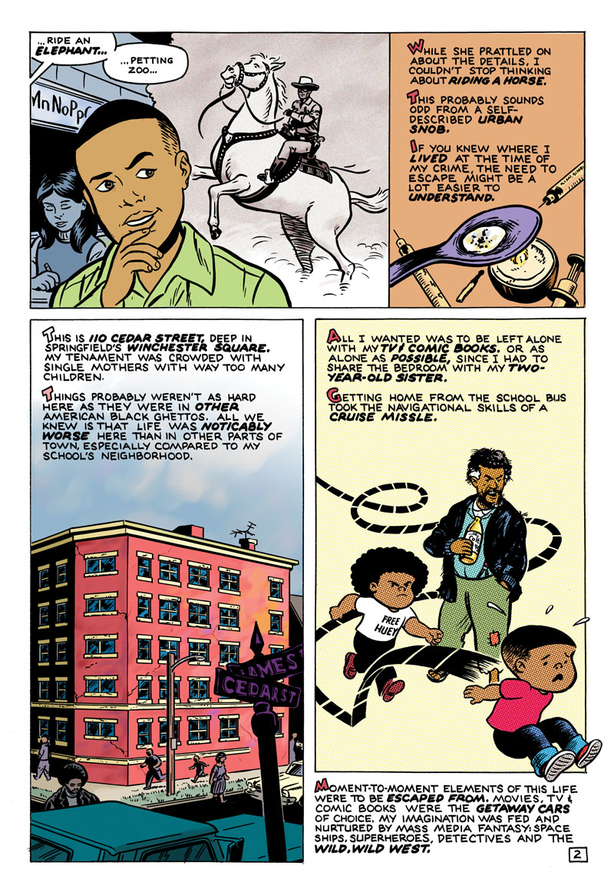
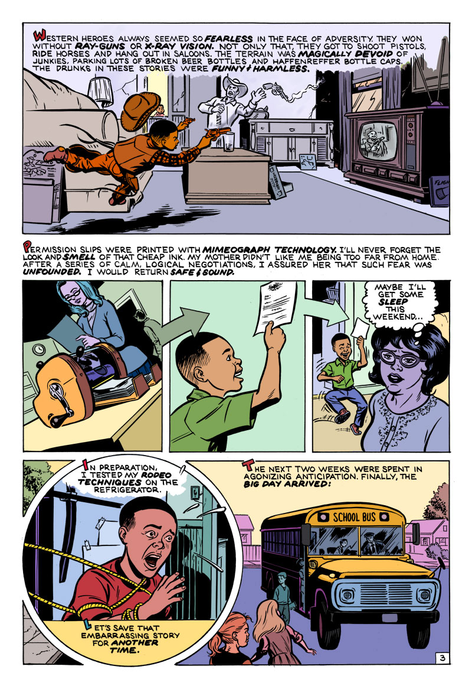
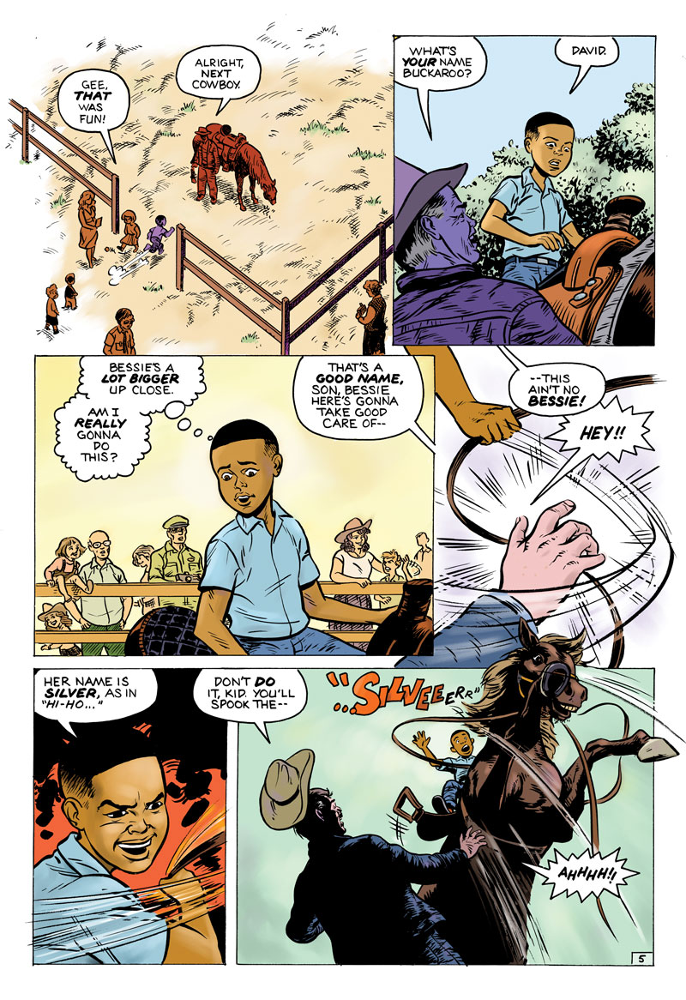
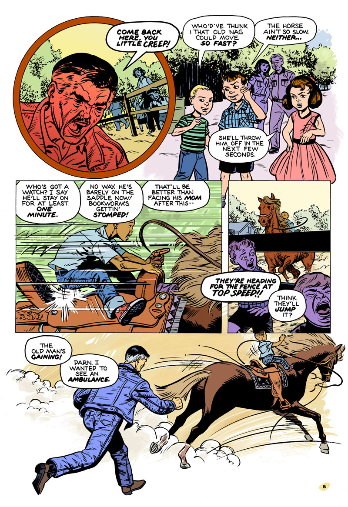
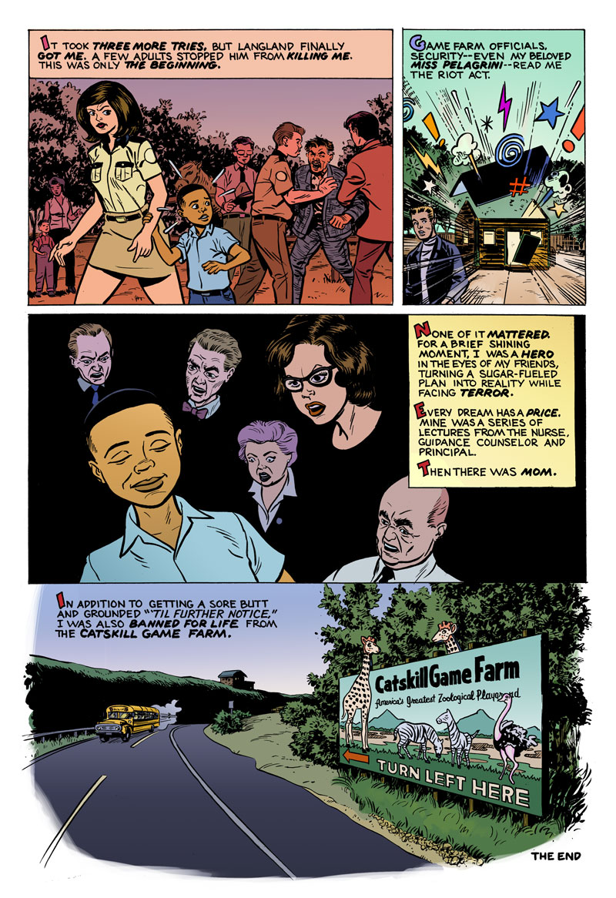

Six-Year-Old Horse Thief
A personal story, from a time when there were no cellphones, no iPads and only one Starbucks. At six years old, I tried stealing a horse from the Catskill Game Farm.
Six-Year-Old Horse Thief: Page 1 of 8
Six-Year-Old Horse Thief: Page 2 of 8
Six-Year-Old Horse Thief: Page 3 of 8
Six-Year-Old Horse Thief: Page 4 of 8

Six-Year-Old Horse Thief: Page 5 of 8
Six-Year-Old Horse Thief: Page 6 of 8
Six-Year-Old Horse Thief: Page 7 of 8

Six-Year-Old Horse Thief: Page 8 of 8
Story Notes
You read that correctly: at six years old, I steal a horse from the Catskill Game Farm. In the background, it's a period story of growing up in a rough part Springfield Massachusetts in the late 1960s. My neighborhood wasn't as bad as other American ghettos, but things were noticeably worse than other parts of the city.
As an cartoonist, there were a lot of "firsts" in this story: my first attempt at drawing children, horses in action and first historical period piece. My recreation of 1968 is entirely subjective, combining researchable facts with personal — if somewhat imperfect and fading — memories. For instance, I can still remember my living room, but had to look up period details like the television and stereo.
This is my second story rendered with traditionally at 12" x 18", a departure from the current standard of 10" x 15". The first was last year's "Bottle of Red". Working larger is really cool right now. There's something about working with the same materials and paramters as Gold-to-Silver Age artists Alex Toth, Bill Draut, Bernie Krigstein, Dale Messick, Dan DeCarlo, Joe Simon/Jack Kirby, June Mills, Milton Caniff, Ramona Fradon, Valerie Barclay, Lee Elias, Steve Ditko and Matt Baker.
Tools and Materials
- 12" x 18" live area on Strathmore 500 bristol paper
- Speedball Super Black India Ink
- Short-handle round #4 sable brush
- Ruling pen (borders)
- Speedball nib #512 (straight lines, details)
- Speedball B6 and B5 (lettering)
- Ames Lettering Guide (4.5 even-spaced calibration)
- Adobe Photoshop CS5 (production, corrections)
David Marshall, sadly reporting that The Catskill Game Farm closed on Columbus Day 2006, ending its 73-year run. Its owners attributed the closing to mounting financial difficulties and dropping attendance.